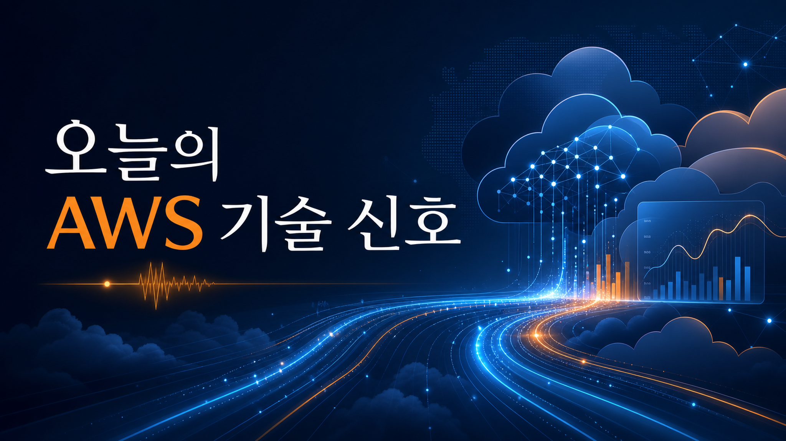
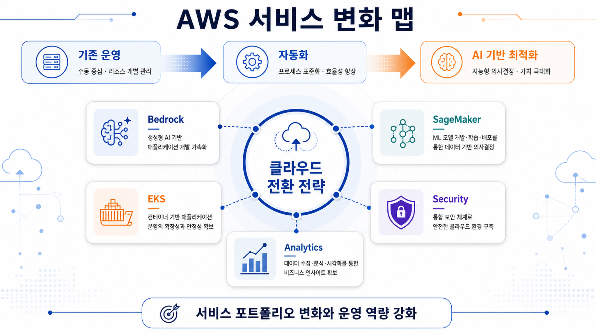
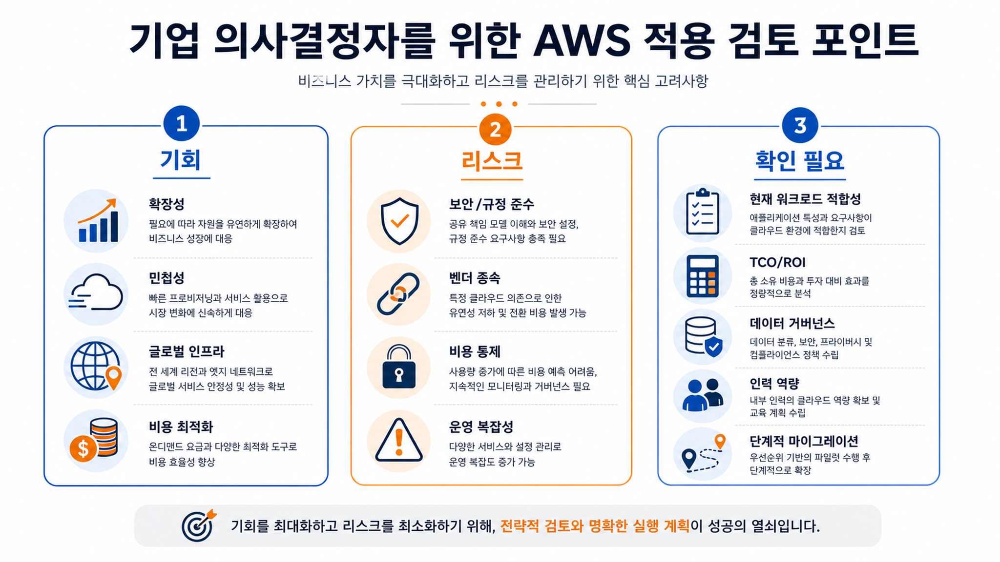

아마존웹서비스 머신러닝 블로그
아마존 세이지메이커 인공지능의 다중 턴 강화학습 모범 사례
지원 티켓 처리나 콘텐츠 조정처럼 여러 단계가 이어지는 에이전트 학습에서는 도구 호출, 결과 해석, 오류 복구가 반복됩니다. 원문은 신뢰 가능한 학습 환경, 외부 평가, 보상 설계, 다중 턴 지표 모니터링을 핵심 모범 사례로 제시합니다.
원문 링크 열기이번 문서는 아마존웹서비스 한국 기술 블로그, 뉴스 블로그, 머신러닝 블로그의 피드와 원문 추출 마크다운을 기준으로 작성한 한국어 전문 블로그형 브리핑입니다. 오늘 신규 저장 항목은 없어서 최근 24시간 로컬 지식 문서를 보조 입력으로 사용했으며, 최신성은 확인 필요입니다.
이번 실행에서는 새로 저장할 게시물이 없었습니다. 다만 최근 24시간 내 로컬 지식 저장소에 수집된 두 건의 아마존웹서비스 머신러닝 블로그 글을 기준으로, 다중 턴 에이전트 학습과 인공지능 생성 피싱 탐지라는 두 흐름을 확인했습니다.

아마존웹서비스 머신러닝 블로그
지원 티켓 처리나 콘텐츠 조정처럼 여러 단계가 이어지는 에이전트 학습에서는 도구 호출, 결과 해석, 오류 복구가 반복됩니다. 원문은 신뢰 가능한 학습 환경, 외부 평가, 보상 설계, 다중 턴 지표 모니터링을 핵심 모범 사례로 제시합니다.
원문 링크 열기아마존웹서비스 머신러닝 블로그
원문은 생성형 인공지능과 공개 출처 정보를 활용한 피싱 메시지가 완벽한 문법과 개인화 문맥을 갖추면서 기존 오탈자 중심 탐지 방식의 효과가 낮아지는 문제를 다룹니다.
원문 링크 열기관찰 가능한 변화는 두 가지입니다. 첫째, 에이전트형 인공지능 학습은 단일 응답 품질보다 여러 단계의 도구 사용과 보상 설계가 중요해지고 있습니다. 둘째, 보안 영역에서는 생성형 인공지능으로 정교해진 피싱에 대응하기 위해 문맥 기반 탐지와 업무 행위 분석이 더 중요해지고 있습니다.

한국 기업은 에이전트 학습·보안 탐지 모두에서 모델 성능만 보지 말고 데이터 접근 경계, 권한, 로그, 평가 기준, 비용 예측 가능성을 함께 확인해야 합니다. 특히 원문 사례가 특정 리전·계정·서비스 조건에 의존할 수 있으므로 실제 도입 전 공식 문서와 콘솔 가용성 확인이 필요합니다.
실행 전략은 단계별 로드맵이 아니라 검증 우선순위로 정리합니다. 첫째, 원문 발표의 가용 리전과 계정 조건을 확인합니다. 둘째, 기존 아키텍처와 권한·로그·데이터 흐름의 변경 범위를 검토합니다. 셋째, 비용과 장애 대응 기준을 문서화한 뒤 제한된 환경에서 검증합니다.
인공지능·데이터·보안 관련 기능은 모델 출력 품질, 접근권한, 감사 로그, 데이터 보존, 서드파티 의존성, 요금 변동 가능성을 함께 검토해야 합니다. 원문에서 확인되지 않은 성능·비용 효과는 확인 필요로 유지했습니다.

이미지는 챗지피티 인증 기반 이미지 생성 경로로 생성했습니다. 원본 프롬프트 로그는 /opt/data/out/aws-daily-blog-20260704/image-prompts.md에 저장했습니다.
프롬프트 로그에는 이미지 목적, 삽입 위치, 생성 프롬프트, 권장 비율, 대체 텍스트를 항목별로 기록했습니다.